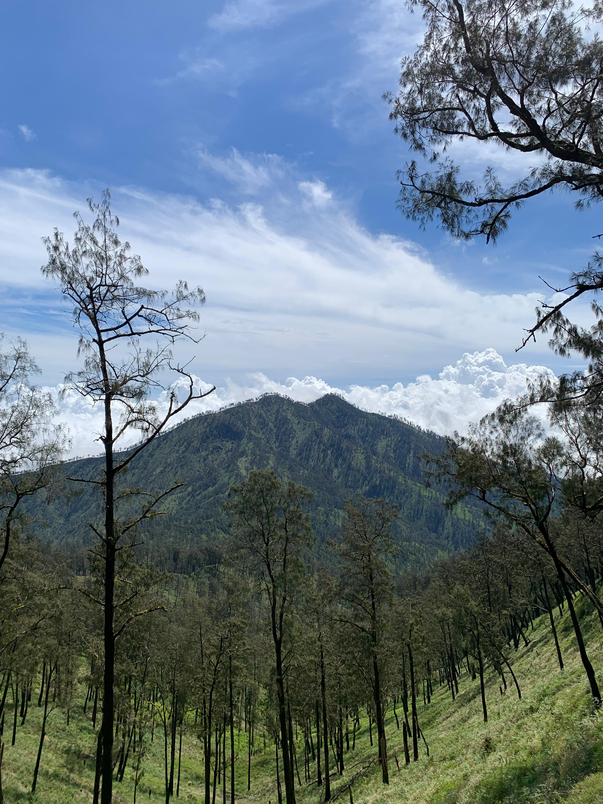
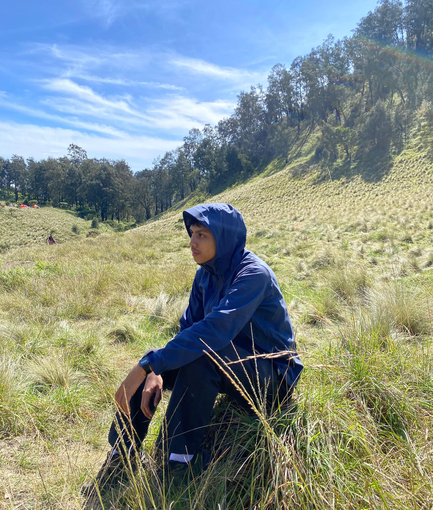

Gunung Buthak, Menjawab Rasa Penasaran
Pendakian kali ini terasa lebih ringan, mungkin karena ekspektasiku tidak terlalu tinggi. Aku hanya ingin berjalan, menikmati perjalanan, dan melihat bagaimana rasanya bermalam lagi di gunung. Tidak ada target waktu, tidak ada ambisi berlebihan. Sepanjang jalur, suasananya cukup tenang. Sesekali berpapasan dengan pendaki lain, saling menyapa sebentar, lalu melanjutkan langkah masing-masing. Tanjakannya tetap terasa, napas tetap terengah, tapi semuanya terasa wajar.
Aku memutuskan untuk nge-camp sebelum summit. Area camp cukup luas dan tidak terlalu padat. Setelah tenda berdiri, rasanya lega. Cuaca hari itu lumayan cerah, jadi suasana lebih nyaman. Langit biru terlihat jelas, dan angin tidak terlalu kencang.
Menjelang sore, aku hanya duduk santai di depan tenda. Tidak melakukan banyak hal. Hanya menikmati suasana yang pelan. Pemandangannya sederhana, tapi cukup untuk membuat pikiran terasa lebih ringan. Kadang memang tidak perlu momen yang luar biasa untuk merasa senang.
Malam datang dengan udara yang lebih dingin. Langit tetap cerah, bintang terlihat cukup banyak. Suasananya tenang, hanya suara angin dan beberapa obrolan pelan dari tenda sebelah. Aku tidur lebih cepat, membiarkan tubuh benar-benar beristirahat. 
Pagi hari, matahari muncul perlahan. Cahaya hangat membuat suasana camp terasa hidup lagi. Rasanya menyenangkan bisa bangun dengan pemandangan seperti itu. Sederhana, tapi berkesan.Pendakian kali ini tidak memberi cerita yang ekstrem. Tidak ada kejadian besar. Tapi justru itu yang membuatnya terasa nyaman. Semua berjalan cukup lancar, dan aku pulang dengan perasaan puas. Gunung Buthak menjawab rasa penasaranku dengan cara yang tenang. Dan mungkin, tanpa sadar, aku mulai masuk ke pilihan kedua, aku akan kembali mendaki gunung lagi.